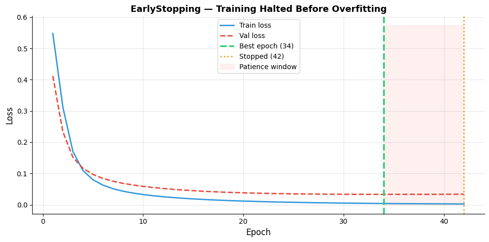
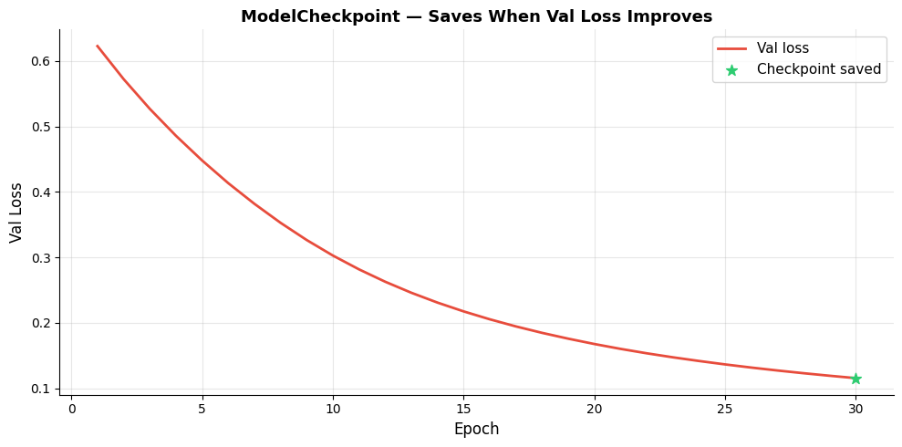
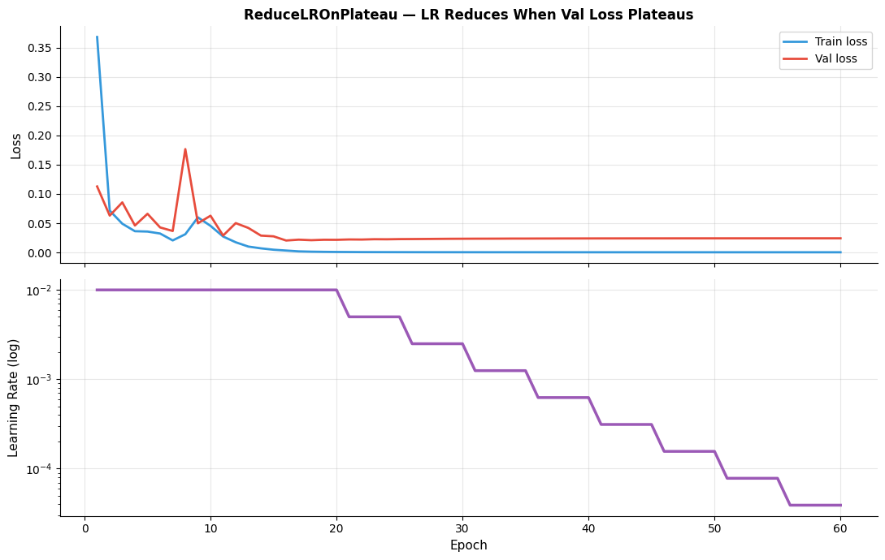
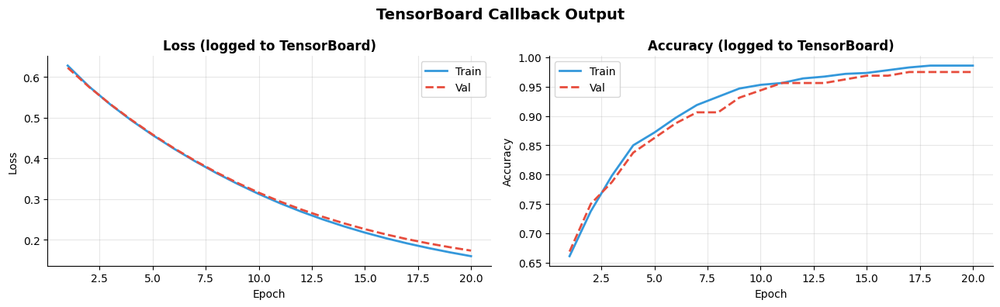
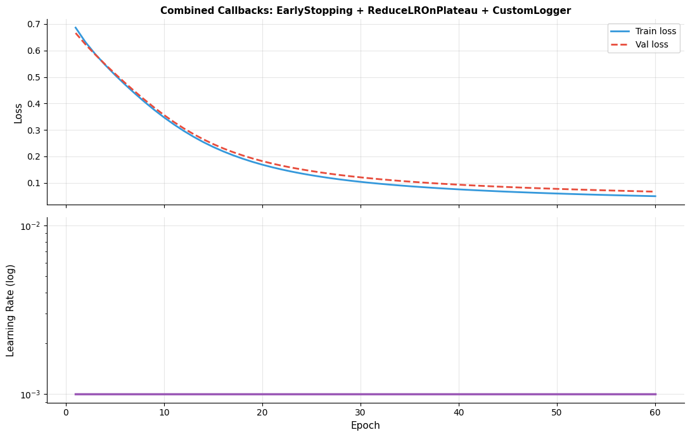

How do you control training with callbacks?#
Topics: EarlyStopping · ModelCheckpoint · ReduceLROnPlateau · TensorBoard · Custom Callbacks
1. EarlyStopping#
What it is#
Stops training when a monitored metric stops improving
Prevents overfitting and saves compute
Optionally restores best weights when training stops
Key arguments#
monitor— metric to watch:'val_loss','val_accuracy'patience— epochs to wait after last improvement before stoppingrestore_best_weights=True— reloads weights from best epoch automaticallymin_delta— minimum change to count as improvementmode—'min'for loss,'max'for accuracy (auto-detected)
Gotchas#
Always monitor
val_lossnotloss— train loss always decreasesrestore_best_weights=Trueis critical — otherwise you get last epoch weights, not bestSet
patiencegenerously — 5 to 20 epochs depending on how noisy val loss is
import tensorflow as tf
import numpy as np
import matplotlib.pyplot as plt
np.random.seed(42); tf.random.set_seed(42)
X = np.random.randn(1000, 8).astype(np.float32)
y = (X[:, 0] + X[:, 1] > 0).astype(np.int32)
model = tf.keras.Sequential([
tf.keras.layers.Dense(128, activation='relu', input_shape=(8,)),
tf.keras.layers.Dense(64, activation='relu'),
tf.keras.layers.Dense(1, activation='sigmoid'),
])
model.compile(optimizer='adam', loss='binary_crossentropy', metrics=['accuracy'])
early_stop = tf.keras.callbacks.EarlyStopping(
monitor='val_loss',
patience=8,
restore_best_weights=True,
verbose=1,
)
history = model.fit(
X[:800], y[:800],
epochs=100,
batch_size=32,
validation_data=(X[800:], y[800:]),
callbacks=[early_stop],
verbose=0,
)
stopped_epoch = early_stop.stopped_epoch
best_epoch = stopped_epoch - early_stop.patience + 1
print(f"Stopped at epoch : {stopped_epoch + 1}")
print(f"Best epoch : {best_epoch}")
epochs = range(1, len(history.history['loss'])+1)
fig, ax = plt.subplots(figsize=(10, 5))
ax.plot(epochs, history.history['loss'], color='#3498DB', linewidth=2, label='Train loss')
ax.plot(epochs, history.history['val_loss'], color='#E74C3C', linewidth=2, label='Val loss', linestyle='--')
ax.axvline(best_epoch, color='#2ECC71', linewidth=2.5, linestyle='--',
label=f'Best epoch ({best_epoch})')
ax.axvline(stopped_epoch+1, color='#F39C12', linewidth=2, linestyle=':',
label=f'Stopped ({stopped_epoch+1})')
ax.fill_betweenx([0, ax.get_ylim()[1] if ax.get_ylim()[1] > 0 else 1],
best_epoch, stopped_epoch+1, alpha=0.08, color='#E74C3C', label='Patience window')
ax.set_xlabel('Epoch', fontsize=12); ax.set_ylabel('Loss', fontsize=12)
ax.set_title('EarlyStopping — Training Halted Before Overfitting', fontsize=13, fontweight='bold')
ax.legend(fontsize=10); ax.grid(True, alpha=0.3)
ax.spines['top'].set_visible(False); ax.spines['right'].set_visible(False)
plt.tight_layout()
plt.savefig('early_stopping.png', dpi=120, bbox_inches='tight')
plt.show()
WARNING: All log messages before absl::InitializeLog() is called are written to STDERR
I0000 00:00:1776953901.518667 7789 cudart_stub.cc:31] Could not find cuda drivers on your machine, GPU will not be used.
I0000 00:00:1776953901.565263 7789 cpu_feature_guard.cc:227] This TensorFlow binary is optimized to use available CPU instructions in performance-critical operations.
To enable the following instructions: AVX2 FMA, in other operations, rebuild TensorFlow with the appropriate compiler flags.
WARNING: All log messages before absl::InitializeLog() is called are written to STDERR
I0000 00:00:1776953903.103007 7789 cudart_stub.cc:31] Could not find cuda drivers on your machine, GPU will not be used.
/opt/hostedtoolcache/Python/3.11.15/x64/lib/python3.11/site-packages/keras/src/layers/core/dense.py:107: UserWarning: Do not pass an `input_shape`/`input_dim` argument to a layer. When using Sequential models, prefer using an `Input(shape)` object as the first layer in the model instead.
super().__init__(activity_regularizer=activity_regularizer, **kwargs)
E0000 00:00:1776953904.309482 7789 cuda_platform.cc:52] failed call to cuInit: INTERNAL: CUDA error: Failed call to cuInit: UNKNOWN ERROR (303)
Epoch 42: early stopping
Restoring model weights from the end of the best epoch: 34.
Stopped at epoch : 42
Best epoch : 34

2. ModelCheckpoint#
What it is#
Saves model weights (or full model) at specified intervals or when metric improves
Ensures you never lose the best model even if training crashes
Key arguments#
filepath— path to save model (can include{epoch}and{val_loss:.2f})monitor— metric to watchsave_best_only=True— only save when metric improvessave_weights_only=True— save only weights, not full modelsave_freq—'epoch'or integer (save every N batches)
Gotchas#
Use
save_best_only=Trueto avoid filling disk with every-epoch checkpointsCombine with EarlyStopping — checkpoint saves best, EarlyStopping restores it
File path with
{epoch:02d}creates separate files per epoch
import tensorflow as tf
import numpy as np
import matplotlib.pyplot as plt
import os
np.random.seed(42); tf.random.set_seed(42)
X = np.random.randn(800, 8).astype(np.float32)
y = (X[:, 0] + X[:, 1] > 0).astype(np.int32)
model = tf.keras.Sequential([
tf.keras.layers.Dense(32, activation='relu', input_shape=(8,)),
tf.keras.layers.Dense(1, activation='sigmoid'),
])
model.compile(optimizer='adam', loss='binary_crossentropy', metrics=['accuracy'])
checkpoint_cb = tf.keras.callbacks.ModelCheckpoint(
filepath='/tmp/best_model.weights.h5',
monitor='val_loss',
save_best_only=True,
save_weights_only=True,
verbose=1,
)
history = model.fit(
X[:640], y[:640],
epochs=30,
batch_size=32,
validation_data=(X[640:], y[640:]),
callbacks=[checkpoint_cb],
verbose=0,
)
# Load best weights
model.load_weights('/tmp/best_model.weights.h5')
results = model.evaluate(X[640:], y[640:], verbose=0)
print(f"Best model test accuracy: {results[1]:.3f}")
# Visualize which epochs were checkpointed
val_losses = history.history['val_loss']
best_val = min(val_losses)
saved_epochs = [i+1 for i, v in enumerate(val_losses) if v <= best_val + 1e-6]
fig, ax = plt.subplots(figsize=(10, 5))
epochs = range(1, len(val_losses)+1)
ax.plot(epochs, val_losses, color='#E74C3C', linewidth=2, label='Val loss')
ax.scatter(saved_epochs, [val_losses[e-1] for e in saved_epochs],
color='#2ECC71', s=80, zorder=5, label='Checkpoint saved', marker='*')
ax.set_xlabel('Epoch', fontsize=12); ax.set_ylabel('Val Loss', fontsize=12)
ax.set_title('ModelCheckpoint — Saves When Val Loss Improves', fontsize=13, fontweight='bold')
ax.legend(fontsize=11); ax.grid(True, alpha=0.3)
ax.spines['top'].set_visible(False); ax.spines['right'].set_visible(False)
plt.tight_layout()
plt.savefig('model_checkpoint.png', dpi=120, bbox_inches='tight')
plt.show()
Epoch 1: val_loss improved from None to 0.62258, saving model to /tmp/best_model.weights.h5
Epoch 1: finished saving model to /tmp/best_model.weights.h5
Epoch 2: val_loss improved from 0.62258 to 0.57221, saving model to /tmp/best_model.weights.h5
Epoch 2: finished saving model to /tmp/best_model.weights.h5
Epoch 3: val_loss improved from 0.57221 to 0.52687, saving model to /tmp/best_model.weights.h5
Epoch 3: finished saving model to /tmp/best_model.weights.h5
Epoch 4: val_loss improved from 0.52687 to 0.48575, saving model to /tmp/best_model.weights.h5
Epoch 4: finished saving model to /tmp/best_model.weights.h5
Epoch 5: val_loss improved from 0.48575 to 0.44807, saving model to /tmp/best_model.weights.h5
Epoch 5: finished saving model to /tmp/best_model.weights.h5
Epoch 6: val_loss improved from 0.44807 to 0.41342, saving model to /tmp/best_model.weights.h5
Epoch 6: finished saving model to /tmp/best_model.weights.h5
Epoch 7: val_loss improved from 0.41342 to 0.38188, saving model to /tmp/best_model.weights.h5
Epoch 7: finished saving model to /tmp/best_model.weights.h5
Epoch 8: val_loss improved from 0.38188 to 0.35287, saving model to /tmp/best_model.weights.h5
Epoch 8: finished saving model to /tmp/best_model.weights.h5
Epoch 9: val_loss improved from 0.35287 to 0.32657, saving model to /tmp/best_model.weights.h5
Epoch 9: finished saving model to /tmp/best_model.weights.h5
Epoch 10: val_loss improved from 0.32657 to 0.30292, saving model to /tmp/best_model.weights.h5
Epoch 10: finished saving model to /tmp/best_model.weights.h5
Epoch 11: val_loss improved from 0.30292 to 0.28179, saving model to /tmp/best_model.weights.h5
Epoch 11: finished saving model to /tmp/best_model.weights.h5
Epoch 12: val_loss improved from 0.28179 to 0.26293, saving model to /tmp/best_model.weights.h5
Epoch 12: finished saving model to /tmp/best_model.weights.h5
Epoch 13: val_loss improved from 0.26293 to 0.24609, saving model to /tmp/best_model.weights.h5
Epoch 13: finished saving model to /tmp/best_model.weights.h5
Epoch 14: val_loss improved from 0.24609 to 0.23105, saving model to /tmp/best_model.weights.h5
Epoch 14: finished saving model to /tmp/best_model.weights.h5
Epoch 15: val_loss improved from 0.23105 to 0.21762, saving model to /tmp/best_model.weights.h5
Epoch 15: finished saving model to /tmp/best_model.weights.h5
Epoch 16: val_loss improved from 0.21762 to 0.20556, saving model to /tmp/best_model.weights.h5
Epoch 16: finished saving model to /tmp/best_model.weights.h5
Epoch 17: val_loss improved from 0.20556 to 0.19468, saving model to /tmp/best_model.weights.h5
Epoch 17: finished saving model to /tmp/best_model.weights.h5
Epoch 18: val_loss improved from 0.19468 to 0.18485, saving model to /tmp/best_model.weights.h5
Epoch 18: finished saving model to /tmp/best_model.weights.h5
Epoch 19: val_loss improved from 0.18485 to 0.17598, saving model to /tmp/best_model.weights.h5
Epoch 19: finished saving model to /tmp/best_model.weights.h5
Epoch 20: val_loss improved from 0.17598 to 0.16782, saving model to /tmp/best_model.weights.h5
Epoch 20: finished saving model to /tmp/best_model.weights.h5
Epoch 21: val_loss improved from 0.16782 to 0.16040, saving model to /tmp/best_model.weights.h5
Epoch 21: finished saving model to /tmp/best_model.weights.h5
Epoch 22: val_loss improved from 0.16040 to 0.15366, saving model to /tmp/best_model.weights.h5
Epoch 22: finished saving model to /tmp/best_model.weights.h5
Epoch 23: val_loss improved from 0.15366 to 0.14753, saving model to /tmp/best_model.weights.h5
Epoch 23: finished saving model to /tmp/best_model.weights.h5
Epoch 24: val_loss improved from 0.14753 to 0.14191, saving model to /tmp/best_model.weights.h5
Epoch 24: finished saving model to /tmp/best_model.weights.h5
Epoch 25: val_loss improved from 0.14191 to 0.13667, saving model to /tmp/best_model.weights.h5
Epoch 25: finished saving model to /tmp/best_model.weights.h5
Epoch 26: val_loss improved from 0.13667 to 0.13186, saving model to /tmp/best_model.weights.h5
Epoch 26: finished saving model to /tmp/best_model.weights.h5
Epoch 27: val_loss improved from 0.13186 to 0.12740, saving model to /tmp/best_model.weights.h5
Epoch 27: finished saving model to /tmp/best_model.weights.h5
Epoch 28: val_loss improved from 0.12740 to 0.12323, saving model to /tmp/best_model.weights.h5
Epoch 28: finished saving model to /tmp/best_model.weights.h5
Epoch 29: val_loss improved from 0.12323 to 0.11935, saving model to /tmp/best_model.weights.h5
Epoch 29: finished saving model to /tmp/best_model.weights.h5
Epoch 30: val_loss improved from 0.11935 to 0.11570, saving model to /tmp/best_model.weights.h5
Epoch 30: finished saving model to /tmp/best_model.weights.h5
Best model test accuracy: 0.981

3. ReduceLROnPlateau#
What it is#
Reduces learning rate when a metric stops improving
Helps escape plateaus without a fixed schedule
Key arguments#
monitor— metric to watchfactor— LR multiplied by this when plateauing:new_lr = lr * factorpatience— epochs to wait before reducingmin_lr— minimum learning rate floorcooldown— epochs to wait after reduction before monitoring again
Key intuition#
Large LR → fast initial progress → plateau → reduce LR → fine-tune to better minimum
More adaptive than a fixed schedule — responds to actual training dynamics
Gotchas#
factorshould be < 1 (e.g. 0.5 or 0.1) — it’s a multiplier not a subtractionSet
min_lrto avoid LR becoming effectively zeroCombine with EarlyStopping — ReduceLR first, then early stop
import tensorflow as tf
import numpy as np
import matplotlib.pyplot as plt
np.random.seed(42); tf.random.set_seed(42)
X = np.random.randn(1000, 8).astype(np.float32)
y = (X[:, 0] + X[:, 1] > 0).astype(np.int32)
model = tf.keras.Sequential([
tf.keras.layers.Dense(64, activation='relu', input_shape=(8,)),
tf.keras.layers.Dense(32, activation='relu'),
tf.keras.layers.Dense(1, activation='sigmoid'),
])
model.compile(optimizer=tf.keras.optimizers.Adam(learning_rate=0.01),
loss='binary_crossentropy', metrics=['accuracy'])
class LRTracker(tf.keras.callbacks.Callback):
def on_epoch_end(self, epoch, logs=None):
self.model.history.history.setdefault('lr', []).append(
float(self.model.optimizer.learning_rate)
)
reduce_lr = tf.keras.callbacks.ReduceLROnPlateau(
monitor='val_loss', factor=0.5, patience=5, min_lr=1e-6, verbose=1,
)
lr_tracker = LRTracker()
history = model.fit(
X[:800], y[:800],
epochs=60,
batch_size=32,
validation_data=(X[800:], y[800:]),
callbacks=[reduce_lr, lr_tracker],
verbose=0,
)
epochs = range(1, len(history.history['loss'])+1)
fig, axes = plt.subplots(2, 1, figsize=(11, 7), sharex=True)
axes[0].plot(epochs, history.history['loss'], color='#3498DB', linewidth=2, label='Train loss')
axes[0].plot(epochs, history.history['val_loss'], color='#E74C3C', linewidth=2, label='Val loss')
axes[0].set_ylabel('Loss', fontsize=11); axes[0].legend(fontsize=10)
axes[0].set_title('ReduceLROnPlateau — LR Reduces When Val Loss Plateaus', fontsize=12, fontweight='bold')
axes[0].grid(True, alpha=0.3)
axes[0].spines['top'].set_visible(False); axes[0].spines['right'].set_visible(False)
lrs = history.history.get('lr', [0.01]*len(epochs))
axes[1].plot(epochs, lrs, color='#9B59B6', linewidth=2.5)
axes[1].set_yscale('log')
axes[1].set_xlabel('Epoch', fontsize=11); axes[1].set_ylabel('Learning Rate (log)', fontsize=11)
axes[1].grid(True, alpha=0.3)
axes[1].spines['top'].set_visible(False); axes[1].spines['right'].set_visible(False)
plt.tight_layout()
plt.savefig('reduce_lr.png', dpi=120, bbox_inches='tight')
plt.show()
Epoch 21: ReduceLROnPlateau reducing learning rate to 0.004999999888241291.
Epoch 26: ReduceLROnPlateau reducing learning rate to 0.0024999999441206455.
Epoch 31: ReduceLROnPlateau reducing learning rate to 0.0012499999720603228.
Epoch 36: ReduceLROnPlateau reducing learning rate to 0.0006249999860301614.
Epoch 41: ReduceLROnPlateau reducing learning rate to 0.0003124999930150807.
Epoch 46: ReduceLROnPlateau reducing learning rate to 0.00015624999650754035.
Epoch 51: ReduceLROnPlateau reducing learning rate to 7.812499825377017e-05.
Epoch 56: ReduceLROnPlateau reducing learning rate to 3.9062499126885086e-05.

4. TensorBoard Callback#
What it is#
Logs training metrics, model graph, histograms to TensorBoard
Launch:
tensorboard --logdir=logs/
Key arguments#
log_dir— directory to write logshistogram_freq— how often to compute weight histograms (epochs)write_graph— whether to visualize model graphupdate_freq—'epoch'or integer (log every N batches)
Gotchas#
Use different log_dir per run — include timestamp to avoid mixing runs
histogram_freq > 0is expensive — use sparingly on large modelsMust pass validation data to see val metrics in TensorBoard
import tensorflow as tf
import numpy as np
import matplotlib.pyplot as plt
import datetime
np.random.seed(42); tf.random.set_seed(42)
X = np.random.randn(800, 8).astype(np.float32)
y = (X[:, 0] + X[:, 1] > 0).astype(np.int32)
log_dir = '/tmp/logs/' + datetime.datetime.now().strftime('%Y%m%d-%H%M%S')
model = tf.keras.Sequential([
tf.keras.layers.Dense(32, activation='relu', input_shape=(8,)),
tf.keras.layers.Dense(1, activation='sigmoid'),
])
model.compile(optimizer='adam', loss='binary_crossentropy', metrics=['accuracy'])
# TensorBoard callback requires tensorboard package — wrap in try/except
try:
tb_callback = tf.keras.callbacks.TensorBoard(
log_dir=log_dir, histogram_freq=1, write_graph=True, update_freq='epoch')
history = model.fit(X[:640], y[:640], epochs=20, batch_size=32,
validation_data=(X[640:], y[640:]),
callbacks=[tb_callback], verbose=0)
print(f"TensorBoard logs saved to: {log_dir}")
print("Launch with: tensorboard --logdir=/tmp/logs/")
except Exception as e:
print(f"TensorBoard not available ({type(e).__name__}) — training without it")
history = model.fit(X[:640], y[:640], epochs=20, batch_size=32,
validation_data=(X[640:], y[640:]), verbose=0)
print("Install tensorboard: pip install tensorboard")
epochs = range(1, 21)
fig, axes = plt.subplots(1, 2, figsize=(13, 4))
axes[0].plot(epochs, history.history['loss'], color='#3498DB', linewidth=2, label='Train')
axes[0].plot(epochs, history.history['val_loss'], color='#E74C3C', linewidth=2, label='Val', linestyle='--')
axes[0].set_title('Loss (logged to TensorBoard)', fontsize=12, fontweight='bold')
axes[0].set_xlabel('Epoch'); axes[0].set_ylabel('Loss')
axes[0].legend(fontsize=10); axes[0].grid(True, alpha=0.3)
axes[0].spines['top'].set_visible(False); axes[0].spines['right'].set_visible(False)
axes[1].plot(epochs, history.history['accuracy'], color='#3498DB', linewidth=2, label='Train')
axes[1].plot(epochs, history.history['val_accuracy'], color='#E74C3C', linewidth=2, label='Val', linestyle='--')
axes[1].set_title('Accuracy (logged to TensorBoard)', fontsize=12, fontweight='bold')
axes[1].set_xlabel('Epoch'); axes[1].set_ylabel('Accuracy')
axes[1].legend(fontsize=10); axes[1].grid(True, alpha=0.3)
axes[1].spines['top'].set_visible(False); axes[1].spines['right'].set_visible(False)
plt.suptitle('TensorBoard Callback Output', fontsize=14, fontweight='bold')
plt.tight_layout()
plt.savefig('tensorboard_cb.png', dpi=120, bbox_inches='tight')
plt.show()
TensorBoard not available (TBNotInstalledError) — training without it
Install tensorboard: pip install tensorboard

5. Custom Callbacks#
What it is#
Subclass
tf.keras.callbacks.Callbackto add custom logic at any training eventOverride methods:
on_epoch_end,on_batch_end,on_train_begin, etc.
Common use cases#
Log custom metrics
Implement custom learning rate schedules
Send notifications (email, Slack) when training finishes
Stop training based on custom conditions
Gotchas#
logsdict contains current epoch metrics — keys match compile metricsself.modelgives access to the model inside callback methodsReturn value is ignored — use
self.model.stop_training = Trueto stop
import tensorflow as tf
import numpy as np
import matplotlib.pyplot as plt
np.random.seed(42)
X = np.random.randn(800, 8).astype(np.float32)
y = (X[:, 0] + X[:, 1] > 0).astype(np.int32)
class CustomLogger(tf.keras.callbacks.Callback):
def __init__(self):
super().__init__()
self.epoch_logs = []
def on_epoch_end(self, epoch, logs=None):
lr = float(self.model.optimizer.learning_rate)
self.epoch_logs.append({
'epoch' : epoch + 1,
'loss' : logs.get('loss', 0),
'val_loss' : logs.get('val_loss', 0),
'lr' : lr,
})
if (epoch + 1) % 10 == 0:
print(f"Epoch {epoch+1}: loss={logs.get('loss',0):.4f}, val_loss={logs.get('val_loss',0):.4f}, lr={lr:.6f}")
def on_train_end(self, logs=None):
best = min(self.epoch_logs, key=lambda x: x['val_loss'])
print(f"Best epoch: {best['epoch']} with val_loss={best['val_loss']:.4f}")
model = tf.keras.Sequential([
tf.keras.layers.Dense(32, activation='relu', input_shape=(8,)),
tf.keras.layers.Dense(1, activation='sigmoid'),
])
model.compile(optimizer='adam', loss='binary_crossentropy', metrics=['accuracy'])
logger = CustomLogger()
all_cbs = [
logger,
tf.keras.callbacks.EarlyStopping(monitor='val_loss', patience=8, restore_best_weights=True),
tf.keras.callbacks.ReduceLROnPlateau(monitor='val_loss', factor=0.5, patience=4, verbose=0),
]
history = model.fit(X[:640], y[:640], epochs=60, batch_size=32,
validation_data=(X[640:], y[640:]),
callbacks=all_cbs, verbose=0)
# Visualize callback interactions
epochs_logged = [d['epoch'] for d in logger.epoch_logs]
losses = [d['loss'] for d in logger.epoch_logs]
val_losses = [d['val_loss'] for d in logger.epoch_logs]
lrs = [d['lr'] for d in logger.epoch_logs]
fig, axes = plt.subplots(2, 1, figsize=(11, 7), sharex=True)
axes[0].plot(epochs_logged, losses, color='#3498DB', linewidth=2, label='Train loss')
axes[0].plot(epochs_logged, val_losses, color='#E74C3C', linewidth=2, label='Val loss', linestyle='--')
axes[0].set_ylabel('Loss', fontsize=11); axes[0].legend(fontsize=10)
axes[0].set_title('Combined Callbacks: EarlyStopping + ReduceLROnPlateau + CustomLogger', fontsize=11, fontweight='bold')
axes[0].grid(True, alpha=0.3)
axes[0].spines['top'].set_visible(False); axes[0].spines['right'].set_visible(False)
axes[1].plot(epochs_logged, lrs, color='#9B59B6', linewidth=2.5)
axes[1].set_yscale('log'); axes[1].set_xlabel('Epoch', fontsize=11)
axes[1].set_ylabel('Learning Rate (log)', fontsize=11)
axes[1].grid(True, alpha=0.3)
axes[1].spines['top'].set_visible(False); axes[1].spines['right'].set_visible(False)
plt.tight_layout()
plt.savefig('combined_callbacks.png', dpi=120, bbox_inches='tight')
plt.show()
Epoch 10: loss=0.3471, val_loss=0.3560, lr=0.001000
Epoch 20: loss=0.1683, val_loss=0.1817, lr=0.001000
Epoch 30: loss=0.1034, val_loss=0.1204, lr=0.001000
Epoch 40: loss=0.0749, val_loss=0.0926, lr=0.001000
Epoch 50: loss=0.0592, val_loss=0.0768, lr=0.001000
Epoch 60: loss=0.0491, val_loss=0.0663, lr=0.001000
Best epoch: 60 with val_loss=0.0663

Interview Q&A#
What callbacks would you use in a standard training pipeline?
Always:
EarlyStopping+ModelCheckpointUsually:
ReduceLROnPlateauor a learning rate schedulerFor debugging:
TensorBoard
How do you implement a warmup learning rate schedule?
Use
tf.keras.callbacks.LearningRateSchedulerwith a custom functionOr subclass
tf.keras.optimizers.schedules.LearningRateSchedule
What is the difference between EarlyStopping and ReduceLROnPlateau?
ReduceLROnPlateaureduces LR and lets training continue — tries to find a better minimumEarlyStoppingstops training entirely — used as the final safety netTypical order: ReduceLR fires first (patience=5), EarlyStopping fires later (patience=15)
Gotchas#
Order of callbacks in the list matters — they execute in order
restore_best_weights=Truein EarlyStopping makesModelCheckpointpartially redundant but checkpoint is still useful for crash recoveryCustom callbacks must call
super().__init__()in__init__